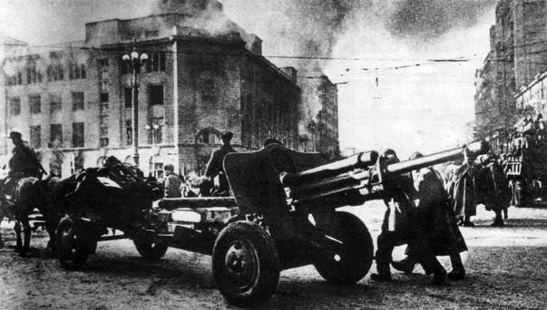

1 вересня 1939 року розпочалася Друга світова війна
«Ніколи знову» − гасло, яке асоціативний ряд сучасного українця прив’язує до Другої світової війни. Коли під цим гаслом вперше відзначали за європейською традицією Дні пам’яті та примирення 8-9 травня 2014 року, тривало протистояння у Маріуполі та антитерористична операція у районі міст Красний Лиман, Слов’янськ та Краматорськ. Хотілося якнайшвидшого завершення бойових дій на сході України, щоб ніколи знову не згадувати про війну. Але не судилося… Тому згадуючи 1 вересня про офіційний початок Другої світової війни та офіційне її завершення 2 вересня, маємо знати, що ці дати, хочі прив’язані до конкретних подій, але є умовними межами в геополітичних процесах того часу.
Передвісники великої війни
Першим «дзвіночком» до майбутнього глобального конфлікту був напад 3 жовтня 1935 року без оголошення війни Королівства Італія на Ефіопську імперію. Підсумком війни стала анексія Ефіопії. 17 липня 1936 року розпочалася громадянська війна в Іспанії, в якій одну сторону конфлікту відкрито підтримував Радянський Союз і Франція, а іншу – Німеччина та Італія. Війна завершилася 2 квітня 1939-го, встановленням диктатури Франсіско Франко. 7 липня 1937 року Японія розпочала війну проти Китаю, а в 1938–1939 роках воювала з СРСР. Проте головні події розвивалися у Європі. 12 березня 1938 року німецькі війська ввійшли до Австрійської республіки — без опору з боку австрійців. Посаду канцлера посів лідер австрійських нацистів Артур Зейсс-Інкварт. Уже наступного дня Гітлер оприлюднив підписаний ним закон, за яким Австрійську республіку було включено до Третього Рейху як «Східну марку» (Ostmark). 10 квітня під контролем нацистів відбувся референдум, під час якого 99,73 % австрійців підтримали приєднання Австрійської республіки до Третього Рейху. У другій половині 1938 року Німеччина, Польща і Угорщина вторглися в Чехословацьку республіку. На заході країни, в Судетах, мешкала значна німецька меншість − 3,25 млн, що становило близько 23% населення Чехословаччини. Спираючись на місцеву німецьку партію, Гітлер заговорив про «забезпечення прав судетських німців». Неймовірно, але у 1938 році співвідношення сил Чехословацької республіки і Третього Рейху було на користь Чехословаччини. Чехословацька Республіка мала в своєму розпорядженні 2 млн навчених солдатів і була спроможна мобілізувати ще мільйон. Натомість загальна чисельність нацистського вермахту становила 2 млн 200 тис. осіб, при цьому за умовами Версальського мирного договору німецька армія майже не мала навченого резерву. Більш того, Чехословацька республіка була вписана в систему міжнародних зобов’язань. Її територіальна цілісність була захищена цілою низкою міжнародних пактів і угод. Насамперед непорушність суверенних кордонів Чехословацької Республіки і колективний захист її від зовнішньої агресії були гарантовані основоположним документом Версальської системи устрою світу після Першої світової війни − Статутом Ліги Націй, включеним як перша частина у всі мирні договори Паризької конференції 1919–1920 рр. Але гаранти її суверенітету і територіальної цілісності зрадили, підписавши 30 вересня 1938 року Мюнхенську угоду, згідно з якою Чехословаччина втратила близько 1/5 своєї території, близько 5 млн населення, а також 33 % промислових підприємств. Нічого не нагадує? 15 березня 1939 року, коли відбулася остаточна ліквідація чехословацької держави, – німецька окупація Чехії та проголошення самостійності Словаччини, сойм у Хусті проголосував за створення незалежної держави під назвою Карпатська Україна. Проте найближчими днями Угорщина з санкції Гітлера окупувала її.
Польське питання
26 січня 1934 року за ініціативи Міністра оборони Польщі Юзефа Пілсудського та Адольфа Гітлера було підписано «Декларацію про незастосування сили між Німеччиною та Польщею». 15 червня того ж року Пілсудський приймав у Варшаві міністра пропаганди Рейху Йозефа Геббельса. Коли 12 травня 1935 року у Варшаві 67-річний Юзеф Пілсудський помер, Гітлер оголосив у Рейху всенародний траур. Усі найбільші німецькі газети вийшли зі співчуттями на перших сторінках. Тому не дивно, що Польща брала активну участь у окупації Чехословаччини. Але поляки точно не сподівалися, що наступним кроком Гітлера стане окупація другої Речі Посполитої. 23 серпня 1939 року в Москві Третій Рейх підписує з СРСР договір про ненапад. У секретному додатковому протоколі передбачався розподіл сфер інтересів у Східній Європі, включно з прибалтійськими державами і Польщею. Пакт, укладений між двома тоталітарними режимами − комуністичним Радянським Союзом і націонал-соціалістичною Німеччиною, став безпосередньою причиною Другої світової війни. 1 вересня Третій Рейх, а 17 вересня – Радянський Союз розпочинають бойові дії проти польської армії; уже 6 жовтня останні її підрозділи капітулювали. Кордон між Німеччиною і СРСР пройшов по «лінії Керзона»…
Радянський Союз – союзник Гітлера
Звісно, приєднанням земель Західної України та Західної Білорусі дії червоної армії в межах таємної угоди з Третім Рейхом не завершилися. 30 листопада 1939 року СРСР напав на Фінляндію. За результатами війни, що завершилася підписанням 13 березня 1940 року в Москві мирного договору, кордон СРСР на Карельському перешийку, в районі Ленінграда і Мурманської залізниці пересунуто в бік Фінляндії і на північний захід з 32 до 150 км, до СРСР відійшли деякі острови у Фінській затоці, а також утворилася ділянка кордону СРСР із Норвегією. Ще восени 1939 року Естонія, Латвія та Литва під загрозою окупації, прямо висловленої Сталіним, уклали з СРСР договори, відповідно до яких на території цих країн розміщено радянські військові бази. 17 червня 1940 року СРСР пред’являє балтійським державам ультиматум, вимагаючи зміни керівництва країн і згоди на введення додаткового контингенту радянських військ. При активній підтримці з Москви, в Естонії, Латвії та Литві одночасно відбуваються державні перевороти. До влади приходять уряди, прихильні до СРСР, які проголошують створення радянських республік і на початку серпня того ж року входять до складу Союзу. 28 червня−3 липня 1940 року Червона армія здійснила військову операцію для примусової передачі Королівством Румунія Бессарабії та Північної Буковини до складу СРСР. 2 серпня 1940-го з частини захоплених земель, а також території Молдавської АРСР, створена Молдавська Радянська Соціалістична Республіка, попередник сучасної Республіки Молдова. Північна Буковина і Південна Бессарабія увійшли до складу Української РСР. Сутичка «союзників» зі зростаючими апетитами була невідворотною. Як і у випадку з Польщею, Гітлер порушив угоду про ненапад і 22 червня 1941 року розпочав німецько-радянську війну.
Антигітлерівська коаліція
12 липня 1941 року у Москві Велика Британія та СРСР підписали угоду про спільні дії у війні проти Третього Рейху. 1 січня 1942 року у Вашингтоні Декларацію про військовий союз проти Гітлера підписали вже 26 держав. Проте фактично з гітлерівським блоком воювали тільки Велика Британія з домініонами, СРСР і США. Найбільший тягар боротьби проти гітлерівської Німеччини припав на Радянський Союз, але завдяки військовій та гуманітарній допомозі союзників йому вдалося перейти в наступ. З червня 1943 року Німеччина та її союзники починають стрімко втрачати свої завоювання на всіх фронтах. Швидкий розвиток подій вимагав від союзників уточнення та узгодження подальших планів ведення війни, подолання її наслідків на звільнених територіях і обговорення повоєнного світового ладу. Цьому були присвячені Тегеранська (28.11–1.12.1943), Ялтинська (4 – 11.02.1945) і Потсдамська (17.07.–2.08.1945) конференції. 8 травня 1945 року представники німецького головнокомандування на чолі з генералом Кейтелем підписали акт про беззастережну капітуляцію збройних сил Німеччини. Але бойові дії проти окремих підрозділів Третього Рейху в Європі тривали аж до кінця травня.
Завершення війни
Після завершення війни в Європі останнім супротивником країн коаліції залишалася Японська імперія. І, на відміну від Німеччини, Японія не збиралася капітулювати. 6 серпня 1945 року на Хіросіму, а через три дні на Наґасакі, американці скинули атомні бомби, міста було майже стерто з поверхні землі. 8 серпня СРСР оголосив війну Японській імперії, а 9 серпня почав наступ. Радянські та монгольські війська розгромили японську Квантунську армію протягом двох тижнів. 2 вересня о 9:02 за токійським часом на борту американського лінкора «Міссурі» підписано акт про беззастережну капітуляцію Японської імперії, хоча бойові дії з окремими підрозділами Квантунської армії тривали до 10 вересня. Під час радянсько-японської війни СРСР окупував японську маріонеткову державу Маньчжоу-Ґо на північному сході Китаю, південний Сахалін і Курильські острови. Маньчжурію радянські війська залишили навесні 1946 року, а анексовані острівні території росіяни відмовляються віддавати дотепер. Через це мирний договір між Росією і Японією, який став би остаточним завершенням Другої світової війни, не підписано досі. Японія вже багато років надсилає ноти протесту після кожного відвідання анексованих територій російськими високопосадовцями… «Пам’ятаємо. Перемагаємо» − таким гаслом послуговуємося, відзначаючи дні пам’яті та примирення нині. Важливо пам’ятати справжню історію Другої світової війни, щоб перемагати в нинішній. Адже путінська Росія, яка нині поводить себе, як гітлерівська Німеччина, рано чи пізно підпише акт про беззастережну капітуляцію: поверне Автономну Республіку Крим і окремі райони Донецької та Луганської областей Україні, а Курильські острови і Південний Сахалін Японії.